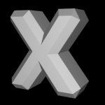

押し出しオブジェクト
押し出しオブジェクトは、下の画像のようにスプラインを立体のポリゴンオブジェクトへ変形させる、素早く融通のきく方法を提供します。

使い方
押し出しクリエータオブジェクトを使うには、スプラインオブジェクトを１つの押し出しオブジェクトにドラッグ＆ドロップし、X 方向距離、Y 方向距離, Z 方向距離パラメータを変更してどのくらい押し出したいかを決定します。それから、カバーを指定するといった、押し出しがどのように働くかを定義する若干の追加パラメータを任意に設定する事が出来ます。時計回りでないスプラインのため、押し出されたポリゴンが外側ではなく内側を向いているような場合（それは意図したかもしれませんし、意図したものではないかもしれませんが）に、法線を反転をチェックする事が必要かもしれません。

押し出しを使った、3D テキストの作成は大変簡単です。スプラインテキストオブジェクトを作成し、押し出しオブジェクトを作成し、スプラインテキストオブジェクトをそれにドロップするだけです。すぐに、3D テキストが完成します。
プロパティ
- 分割数:押し出されたポリゴンを作成する際に、どれくらい分割するかを定義します。
- X 方向距離: X 軸にスプラインが押し出されるべきオフセット量
- Y 方向距離: Y 軸にスプラインが押し出されるべきオフセット量
- Z 方向距離: Z 軸にスプラインが押し出されるべきオフセット量
- 法線を反転: オフの場合（デフォルト）、時計回りのスプラインは外側を向いた押し出されたポリゴンを生成します。これをチェックすると、法線が反転するので、ポリゴンは内側を向きます。
- カバー: 押し出されたスプラインが、空洞であるか、または正面、背面、両面でフタをされるかを決定します。
- 半径: ベベルの半径
- マイター制限角度: マイター制限角度は、ポリゴンの角が傾斜しているどの段階で覆われるかを決定します。高いマイター制限角度の値は、鋭い角を許容します。下のテーブルを参照してください。
|

|
|
|
マイター制限角度=1.5
|
マイター制限角度=3.0
|
- タイプ: 押し出しのエッジのベベルタイプを決定します。

|

|

|
|

|
|
なし
|
リニア
|
凸面カーブ
|
凹面カーブ
|
階段
|